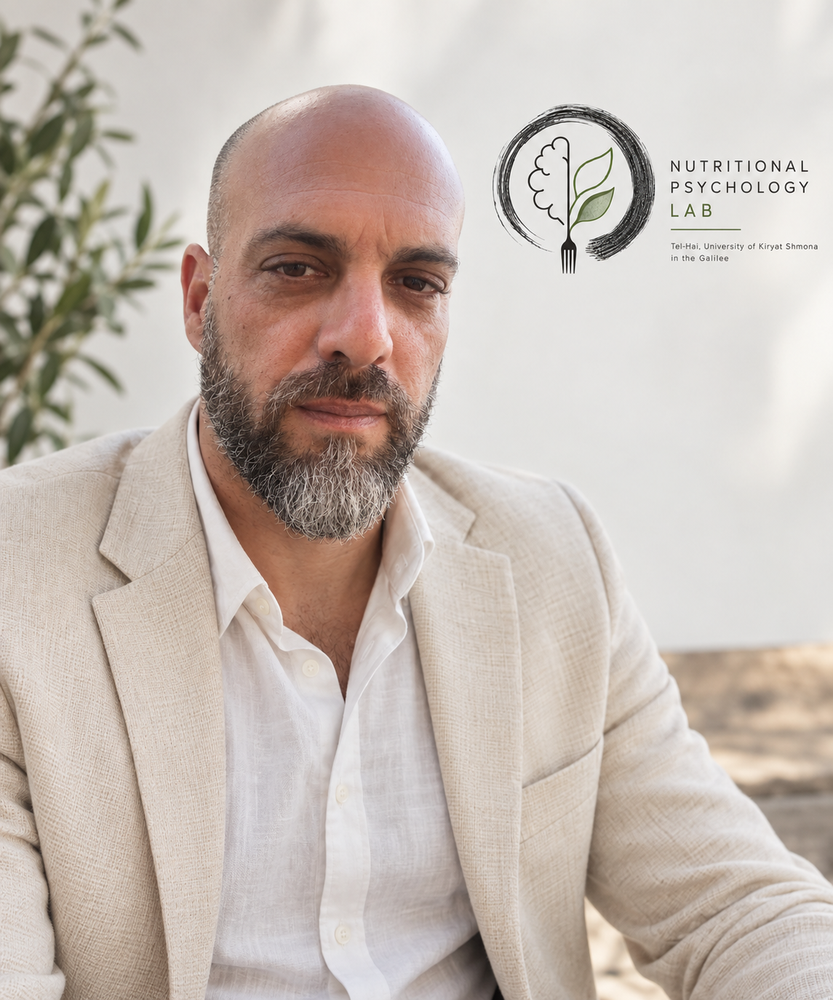

Prof. Omer Horovitz
פרופ׳ עומר הורוביץ
Associate Professor and Head of the School of Psychology at Tel-Hai University; Head of the Nutritional Psychology Lab (NPL).
ראש המעבדה לפסיכולוגיה תזונתית, אוניברסיטת תל-חי

From affective neuroscience to nutritional psychology.
My research began in psychobiology and neuroscience, with a focus on stress, trauma and emotional circuitry. Postdoctoral work expanded this trajectory into developmental clinical neuroscience and youth anxiety, using methods including EEG, event-related potentials and eye tracking.
At the Nutritional Psychology Lab, these perspectives converge in nutritional psychology: the study of how food and eating relate to mental health, identity, psychopathology and the broader psychological experience of being human.
2025— Associate Professor, Psychology
2017— Head, Nutritional Psychology Lab
Postdoc Developmental clinical neuroscience, University of Haifa
PhD Neurobiology / Psychology, University of Haifa
Research profiles & identifiers
Publication records, scholarly profiles and persistent researcher identifiers for Prof. Omer Horovitz (עומר הורוביץ).